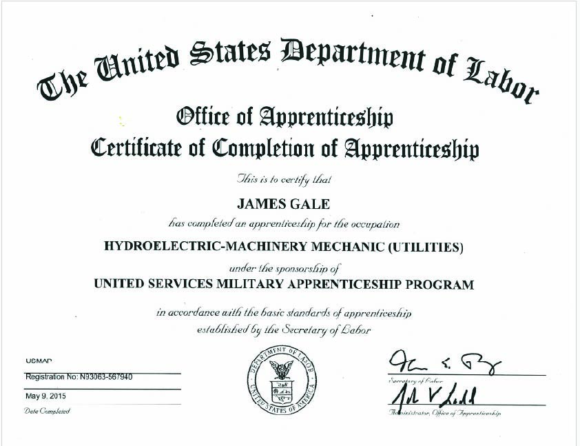
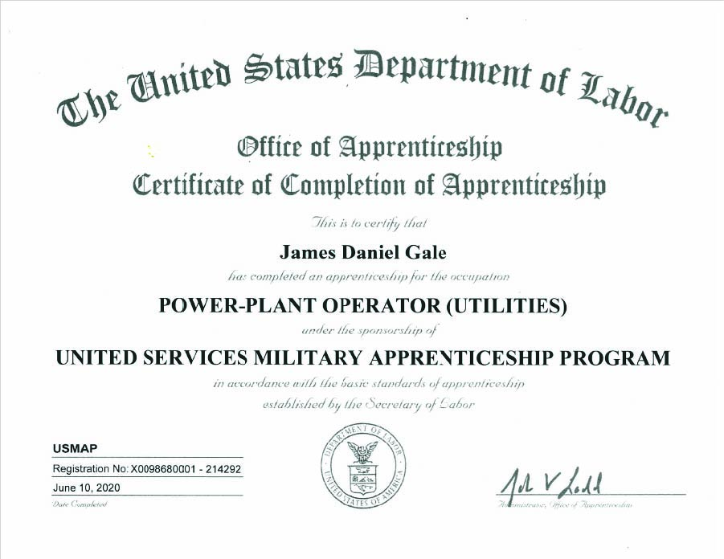
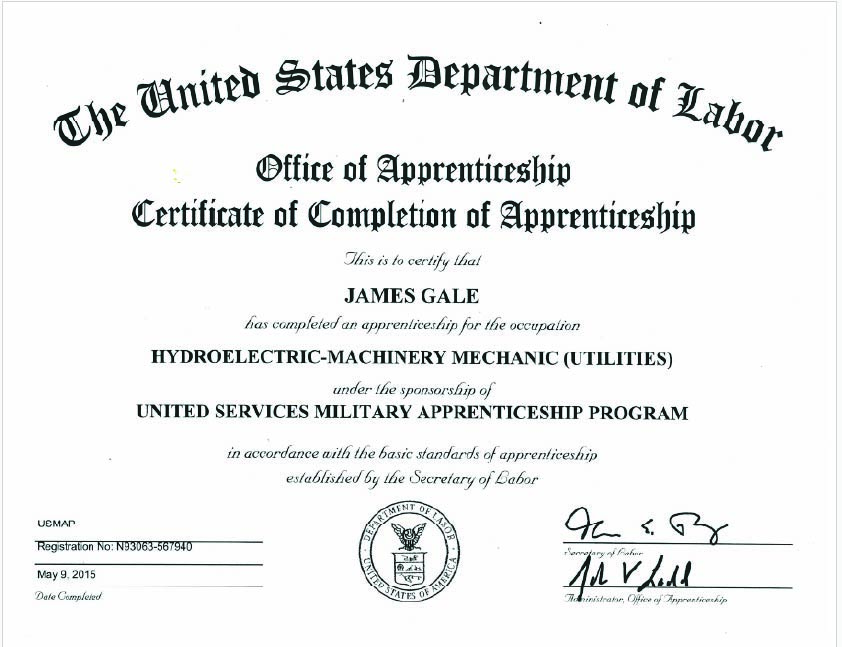
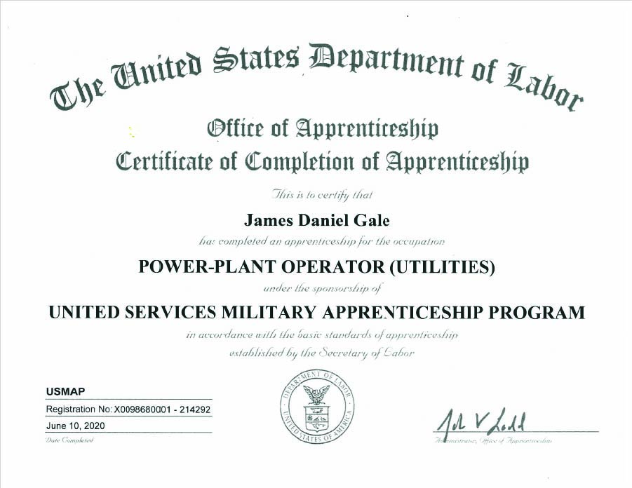

Sep2023-present
YMCA (Eau Claire Wi)
Sep2023-present
Water Safety Instructor responsible for teaching the skills to learn to swim from infants to adults, and beginner to advanced
SKILLS: Swimming, Targeted Communication, First Aid, Patience, Empathy, Adaptability
CERTIFICATIONS: RedCross Water Safety Instructor(WSI), RedCross CPR for Professional
Jun2024-Aug2024
Target (Eau Claire Wi)
Jun2024-Aug2024
Food Expert(Seasonal worker) Stocked Shelf in the Consumable Department, Assisted Customers with shopping needs, Back Stocked item to proper location. Assisted in shopping for items for online customers, use sales resistor. Use powered equipment.
Skills: Food Safety, user of database for inventory,
Jun2023-present
Sokup's Market (Chippewa Falls Wi)
Jun2023-present
Deli and Meat handler. Responsible for greeting guest, explain store products, ensuring customer service, cleaning equipment, slicing and weighting store products.
Skills: food safety, food preparation, food handling, customer service, communication, time management, cleaning.
subway
2009-2011
Qualifiedls
Skills: food safety, food preparation, food handling, customer service, communication, time management, cleaning, cash resistor operations
OCT2019-Sep2022
USS RONALD REAGAN CVN76
Quality Assurance Supervisor: Responsible for opening and closing reviews on Controlled Work Packages (CWP) and assuring all Objective Quality Evidence will support recertification. Ensuring all CWPs are completed and reviewed prior to reactor plant startup, propulsion plant startup. Train and supervise Quality Assurance Inspectors, Cleanliness inspectors and craftsmen. Conduct Audits and Surveillances on maintenance
Qualified Propulsion Plant Watch Supervisor. Supervising 23 personnel that are responsible for the safe operation of a Nuclear Reactor two sets of steam powered propulsion turbines, four electrical Generators, two flash type distilling units, a Reboiler, an various air compressors and support equipment.
NOV2019-Mar2022
Department Safety Technician. Assists with the duties of Safety Officer and Safety Manager in coordinating the implementation of the Navy Safety and Occupational Health (SOH) Program, Traffic Safety Program, and Recreational and Off-Duty Safety (RODS) Program. Performs administrative and record keeping functions in support of the command safety organization. Identifies hazards, unsafe work practices, and health hazardous conditions. Assists in the evaluation of workplace hazards, including periodic workplace monitoring. Prepares various safety and mishap reports, maintains hazard abatement program documentation, and aids in mishap investigations. Arranges or conducts indoctrination and periodic SOH training. Disseminates SOH program information throughout the chain of command.
JAN2022-MAR2022
Production Watch Supervisor. Stand Propulsion Plant Watch Supervisor daily during the Selected Restricted Availability (SRA). Safely supervise a Reactor and Steam Plant during dynamic shutdown conditions with 0 mishaps during over 500 hours.
JUL2021-JAN2022
RP30 Leading Chief Petty Officer: Leading six people in supporting the division in the Technical assistance. Coordinate Observed evolutions. Quality Assurance training and planning. Training, mentoring and assisting of new personnel to the ship and department the basic qualification, watch standing and day to day on the ship, and in Japan.
FEB2020-JUL2021
RP02 Leading Chief Petty Officer: Lead 46 people in the day to day care and performance of both preventive and corrective maintenance within Two Main Machinery Room. Maintenance of two sets of steam powered propulsion turbines, two electrical Generators, two flash type distilling units, various air compressors and support equipment
NOV2019-FEB2020
RP05 Leading Chief Petty Officer: Lead 21 people in the day to day care and performance of both preventive and corrective maintenance of out of plant spaces. Maintenance of two reboilers, Oil Water Separator, four main propulsion shaft bearings and various support equipment.
OCT2019 FEB2020
RP30 Leading Chief Petty Officer: Leading four people in supporting the division in the Technical assistance. Coordinate Observed evolutions. Quality Assurance training and planning
SKILLS: hazard perception, conflict resolution, Report writing (analysis and brevity) Mar2022-Present Machinery Division QA Planner:
SEP2016-SEP2019
NRD New York (Garden City, NY)
2016-2019
Recruiter Canvasser: Recruits individuals into the U.S. Navy and Naval Reserve; possesses expertise in recruiting techniques and knowledge of recruiting textbooks and Navy enlistment programs and policies. Communicates and relates effectively with prospects, groups and the community. Drive a Vehicle and maintain usage and mile logs
SKILLS: : Person Time Management, Networking, Mentoring, Counseling, Interpersonal Communication, Personal Selling, Marketing
Other: Lions Club Member (Washington NJ)
AUG2016-SEP2016
Naval Recruiting Orientation Unit (Pensacola, FL)
2009-2011
School to learn how to recruit personnel for the Navy.
Advancement to Chief Petty Officer
SKILLS: ip
May2011-AUG2016
USS GEORGE WASHINGTON CVN73
Qualified Propulsion Plant Watch Supervisor. Supervising 23 personnel that are responsible for the safe operation of a Nuclear Reactor two sets of steam powered propulsion turbines, four electrical Generators, two flash type distilling units, a Reboiler, an various air compressors and support equipment.
Quality Assurance Supervisor: Responsible for opening and closing reviews on Controlled Work Packages (CWP) and assuring all Objective Quality Evidence will support recertification. Ensuring all CWPs are completed and reviewed prior to reactor plant startup, propulsion plant startup. Train and supervise Quality Assurance Inspectors, Cleanliness inspectors and craftsmen. Conduct Audits and Surveillances on maintenance.
2011-2012
Moral Welfare and Recreation (MWR) Leading Petty Officer: Organized Ship's entertainment, tours and social activities and instituted phase replacement program for more than 100 pieces of gym equipment. Responsible for daily transactions resulting over $400,000. 2011-2012 Repair 5 Locker Leader. Lead a team of 109 personnel in the efforts to keep the ship safe and trained in insipient repairs
2011-2012
Repair 5 Locker Leader. Lead a team of 109 personnel in the efforts to keep the ship safe and trained in insipient repairs
2012-2014
Quality Assurance Planner. Wrote Control Work Packages (CWP) and Formal Work Packages (FWP) provide Quality Assurance Training to division of 140 personnel. Coordinate Observed Evolutions.
2012-2016
Department Safety Technician. Assists with the duties of Safety Officer and Safety Manager in coordinating the implementation of the Navy Safety and Occupational Health (SOH) Program, Traffic Safety Program, and Recreational and Off-Duty Safety (RODS) Program. Performs administrative and record keeping functions in support of the command safety organization. Identifies hazards, unsafe work practices, and health hazardous conditions. Assists in the evaluation of workplace hazards, including periodic workplace monitoring. Prepares various safety and mishap reports, maintains hazard abatement program documentation, and aids in mishap investigations. Arranges or conducts indoctrination and periodic SOH training. Disseminates SOH program information throughout the chain of command.
2014-2016
Ships Assistant Quality Assurance Officer. Supervised five personnel in the management, Training and qualification of 900 people throughout five departments in all preventive and corrective maintenance. Conduct audits and surveillances on work processes
2012-2016
Damage Control Training Team. Train and qualify personnel in the efforts to keep the ship safe and trained in insipient repairs.
SKILLS: writing procedures (PLANNING), Swimmer, Forklift Operator, hazard perception, conflict resolution, Report writing (analysis and brevity)
Jan2009-APR2011
NPTU BALLSTON SPA (Ballston Spa, NY)
2009-2011
Qualified Instructor and Maintenance person. Individuals direct teaching and learning activities in schools; write learning objectives; prepare test items; evaluate instructional materials and results; and counsel students on academic learning problems. Operates, repairs, and performs maintenance on machinery and auxiliary equipment. Operates main propulsion steam engines, turbo generators, and associated systems (condensate, circulating water, lube oil, etc.); operates auxiliary systems, including compressed air, potable water, air conditioning and refrigeration systems; completes maintenance forms; exercises environmental control procedures to prevent or minimize air pollution and oil spills
SKILLS: Trainer/ Instructor, mentorship
APR2003-DEC2008
USS HARRY S TRUMAN CVN75
Qualified Chief Machinery Operator, Leading 8 personnel responsible for the safe operation of two sets of steam powered propulsion turbines, two electrical Generators, two flash type distilling units, a Reboiler, various air compressors and support equipment.
2007-2008
Material Condition Assessment Process Coordinator (MCAP Coordinator): Track all material discrepancies and assisted with getting the ships force personnel the help from ship yard and TEAM 1. Planned, setup, and participated in weekly meetings and all material discrepancies with in Reactor Department
2006
completed over 10 Steam plant valve repairs
JAN2006
Completed Steam Plant Trade Skills course. Trained in the refurbishment and repairs of small valves. The use of lapping tools, Carbide cutters, concentric cutters. Learned general development of Formal Work Package
2005-2006
Level Leader: Supervised five personnel in enhancing the level of material Preservation and condition in Two Main Machinery Room
2003-2006
Trained to replace, repair, and install Thermal and Acoustic Isolation and Lagging
SKILLS: .Familiar with hydraulic systems, Familiar with compressed air systems, Familiar with fluid systems, Maintenance Technician, Problem Resolution, Reading Technical drawing/ blue prints, Trainer/ Instructor, Leader, Supervisor, Manager
OCT2001-MAR 2003
Naval Nuclear Power Program
Classroom and on hands training on the as a machinist mate in navy and operate a Navy Nuclear Reactor starting in Goose Creek, SC and finishing in Ballston Spa, NY
SKILLS: Basic Machinery, Mechanical Systems, Heat Transfer, General Physics, Power Systems, Industrial Safety, Troubleshooting Mechanical System

 


